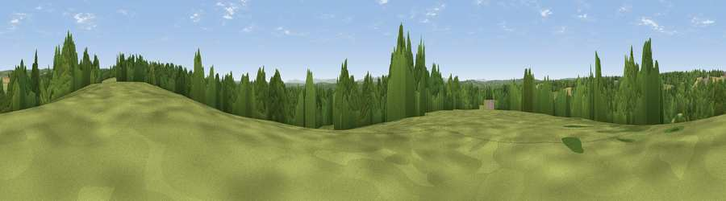

Viewpoint near Danehill
#40503 in England · top 78% of its area beats it · near DanehillWhere it is
The exact computed spot (TQ 39275 26925). Click the marker for map links.
The view, rendered

A 360° render of this exact spot computed from the terrain model, tree cover and land cover — summer colours, afternoon light, calibrated against photographs of famous viewpoints. Real trees, hedges and buildings will differ in detail.
The panorama
Grey silhouette: terrain skyline in each direction (720 bearings, Earth curvature and refraction included). Dashed green: skyline with trees (+15 m) and buildings (+8 m) as obstacles. Blue strip: how far the ground is visible on each bearing.
Where the view opens
Wedge length = distance to the farthest visible ground on that bearing (vegetation-aware). Rings at 10, 25 and 50 km.
What fills the view
49% woodland · 44% grassland · 5% cropland · 2% built-up
Angular shares of the visible panorama (visual magnitude), not map area. Landscape diversity 0.42 (0–1 Shannon).
Key numbers
More beautiful places nearby
The staircase of upgrades: each row has a higher view potential than everything closer. Driving times are estimates from straight-line distance, calibrated against real road routing — check an actual route before setting out.
| Place | Direction | Drive | Score |
|---|---|---|---|
| Viewpoint near Danehill | ENE · 1 km | ~3 min | 45.5 |
| Viewpoint near Sharpthorne | N · 5 km | ~12 min | 47.1 |
| Viewpoint near Sharpthorne | NNW · 6 km | ~13 min | 48.0 |
| Viewpoint near Forest Row | NE · 7 km | ~14 min | 48.1 |
| Viewpoint near Forest Row | NE · 7 km | ~15 min | 52.6 |
| Viewpoint near Fairwarp | ENE · 8 km | ~16 min | 54.3 |
| Viewpoint near Upper Hartfield | ENE · 9 km | ~18 min | 59.6 |
| Viewpoint near Plumpton | S · 15 km | ~26 min | 80.4 |
51.02483, -0.01546 · source: screening · position refined by local search. Computed location — check access rights before visiting.